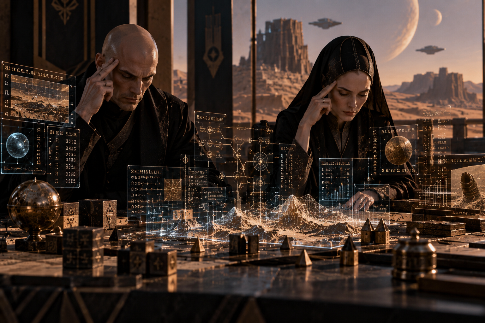

PRÓLOGO · EL CONSEJO TE OBSERVA
El enigma de los archivos
En un imperio construido sobre información y estrategia, ha desaparecido un registro secreto. Los rumores amenazan con condenar a inocentes.
El Maestro Arel te enseñará a separar los hechos de las hipótesis, detectar contradicciones y justificar tus decisiones. No necesitas acertar siempre: necesitas aprender a pensar mejor.
Cuatro rutas de entrenamiento, de 5.º a 8.º básico.
ARCHIVOS VISUALES · UNIVERSO MENTAT
Los escenarios de tu entrenamiento


◈ CÁMARA DE INFERENCIAS